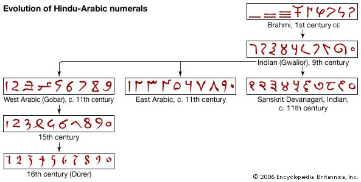

-- heading # Number Systems ...or "is base 10 a good idea?" -- heading ## Why do we use base 10? -- center We have 10 fingers (5x2). We can count up to 10 with our fingers. -- center Hmm. OK. Got it. But... how about beyond 10? -- heading Super abridged history of numbering systems -- center ### Egyptian numbers (3000-1600 BC) | = 1 ^ = 10 <small><em>(egiptians wrote left to right)</em></small> |||^^ = 23 -- center Sounds familiar? -- center ### <code>XXIII</code> Exactly. Romans. They adapted and extended the Egyptian system. Symbols for 1, 5, 10, 50... multiples of 5 and 10. -- center ### Babylonian numbers: 1750 BC Numerical system with 60 as its base. Rather than 60 different symbols, they use clusters of 10. -- center <img src="img/babylonian-numbers.png" style="width:60vw; display: block; margin: 0px auto;"/> -- center Babylonians being leading astronomers... ...the base 60 is still present in measuring time and angles. -- center ### The place-value concept <em>Another great Babylonian innovation.</em> Value of a number depends on its location. E.g. 222 - not all twos have the same value. -- center ### Maya numbers (400 BC-150 AD) Mayans also created a place-value system, using base 20. They also introduced the concept of "zero". -- center -- center ### Hindu-Arabic numerals: from 300 BC Base 10, place value system, includes zero. Innovation: each number up to the base has a different symbol. -- center  -- center ### Zero Sanscrit: <strong>sunya</strong> (empty) Arabic: <strong>sifr</strong> - from where "zero" evolves -- center ...it took a few more centuries for Europeans to replace the Roman with the <em>Arabic</em> system. <small>...until the middle ages. The church in Rome, Latin, y'know...</small> -- heading # Let's talk about 12. -- center ## 12 is a superior highly composite number A natural number which has more divisors than any other number scaled relative to some positive power of the number itself. -- center A highly composite number, is a positive integer with more divisors than any smaller positive integer has. -- center ## In short, 12 is highly divisible, given its size. 12 can be divided by 1, 2, 3, 4, 6 and 12. 12 is the smallest number with four non-trivial factors (2, 3, 4, 6) And the smallest to include as factors all four numbers 1 to 4 -- center ...in practical terms: # There are 6 ways to evenly split a dozen -- center ## Common uses of 12 and dozens - A dozen of eggs - 12 cans of beer - 12x2 hours in a day - 12 months in a year - Twelve semitones in music - Twelve bar blues - ... -- Babylonians used 12 as a unit for counting with fingers. -- The first few superior highly composite numbers: 2, 6, 12, 60. Used as radices for: - Binary (base 2) - Senary (base 6) - Duodecimal (base 12) - Sexagesimal (base 60) ...<em>the babylonians were up to something</em> -- heading # Let's talk about six, baby. -- center ## Demo ### why 6 is the best base to use for counting with your fingers -- heading # Thanks -- heading ## Credits http://www.historyworld.net/wrldhis/PlainTextHistories.asp?historyid=ab34 https://en.wikipedia.org/wiki/Duodecimal